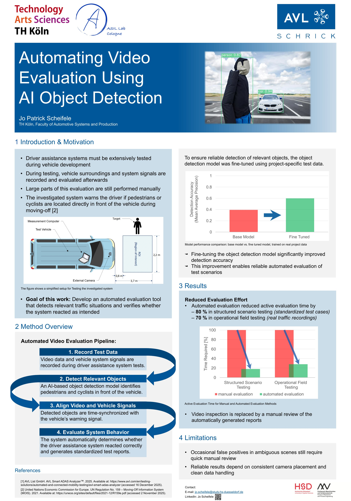

PRJ-001 · Bachelor thesis · Object Detection
AI-based Video Analysis
Automating the evaluation of driver assistance tests with a fine-tuned object detection model.
- Degree
- B.Eng. Automotive Engineering
- University
- TH Köln
- Written at
- AVL-Schrick GmbH
- Stack
- Python · YOLO · Ultralytics
Overview
Can a fine-tuned object detection model take over the tedious part of evaluating test videos? My bachelor thesis answered that question for Moving-Off Information Systems in commercial vehicles.
These systems warn the driver when a pedestrian or cyclist is directly in front of the vehicle as it pulls away. To validate them, test drives are recorded on video while the vehicle signals are logged – and afterwards someone has to watch the footage and check whether the system reacted as intended. Most of that work was still done by hand.
General-purpose detection networks are trained on everyday images and struggle with the specific visual conditions of structured automotive test scenarios. I therefore built a project-specific dataset from real measurement videos, using and comparing different labelling methods, and fine-tuned a YOLO model on it. Several training configurations were compared against standard pre-trained models using precision, recall and mean Average Precision (mAP).
The fine-tuned model detected and localised objects more accurately, produced far fewer false classifications and stayed stable across different test conditions. Integrated into an automated evaluation workflow, it turned hours of video review into a quick check of generated reports.
Approach
-
01
Record test data
Video and vehicle system signals are recorded during driver assistance system tests.
-
02
Detect relevant objects
The fine-tuned model identifies pedestrians and cyclists in front of the vehicle.
-
03
Align video & signals
Detections are time-synchronised with the vehicle's warning signal.
-
04
Evaluate behaviour
The tool checks whether the system reacted correctly and generates standardised test reports.
Poster
The thesis itself is confidential (NDA). This A1 poster is its public summary.

Want to know more about the project? I'm happy to talk about it – within the limits of the NDA.
Get in touch